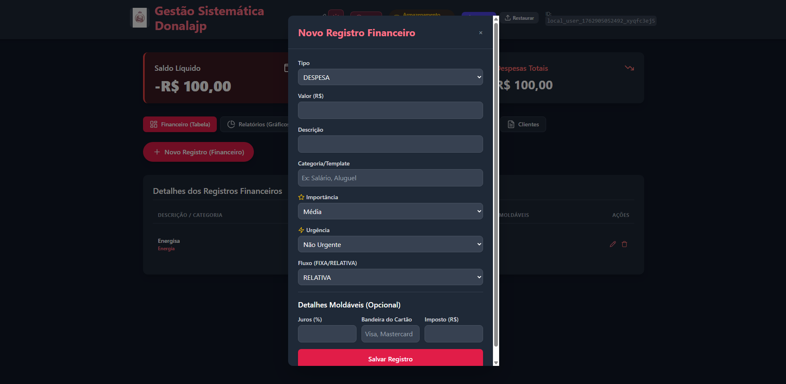
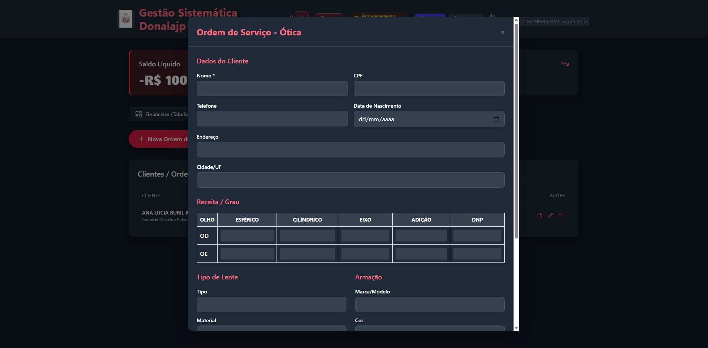
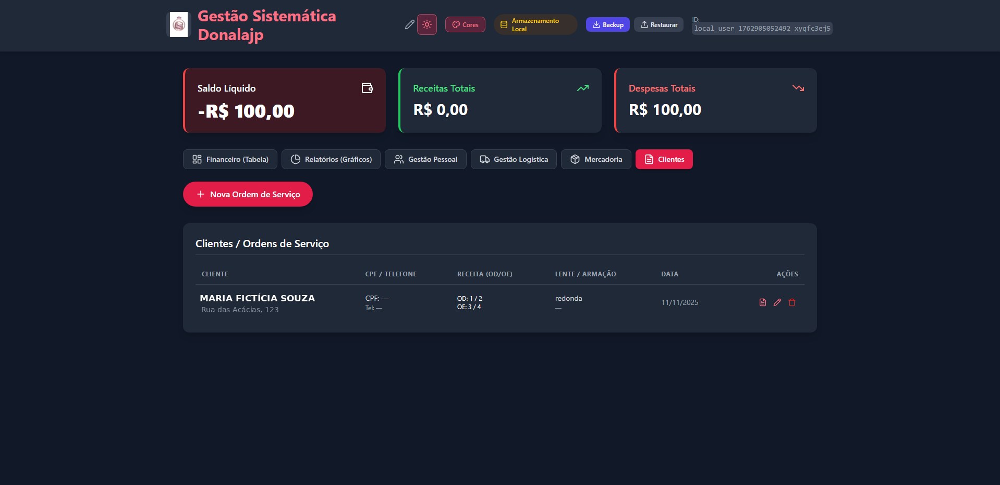
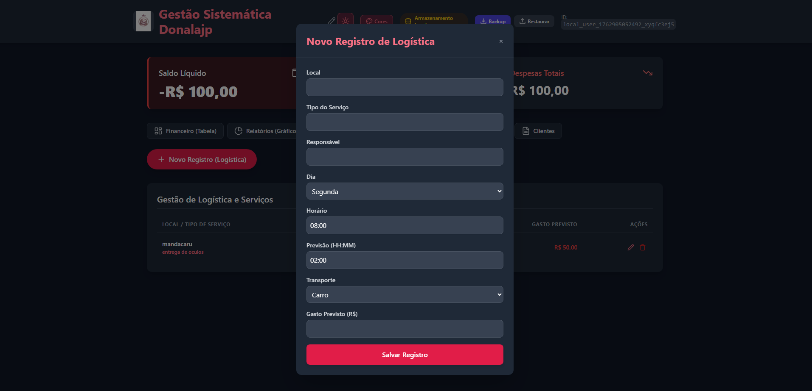

Sistema administrativo completo para óticas e pequenos empreendimentos, 100% local e offline-first: centraliza financeiro, clientes, estoque e logística em um único ambiente, sem depender de servidores externos.




Dashboard com saldo líquido, receitas e despesas totais, controle de movimentações e relatórios em PDF.
Cadastro completo de clientes, receita óptica detalhada (OD/OE) e geração automática de Ordem de Serviço em PDF.
Cadastro de produtos com SKU, custo, preço e quantidade, integrado ao módulo financeiro.
Planejamento de entregas e serviços externos, com custo previsto integrado ao painel financeiro.
Exportação local em PDF ou JSON, com recuperação imediata em caso de falha ou perda de sessão.